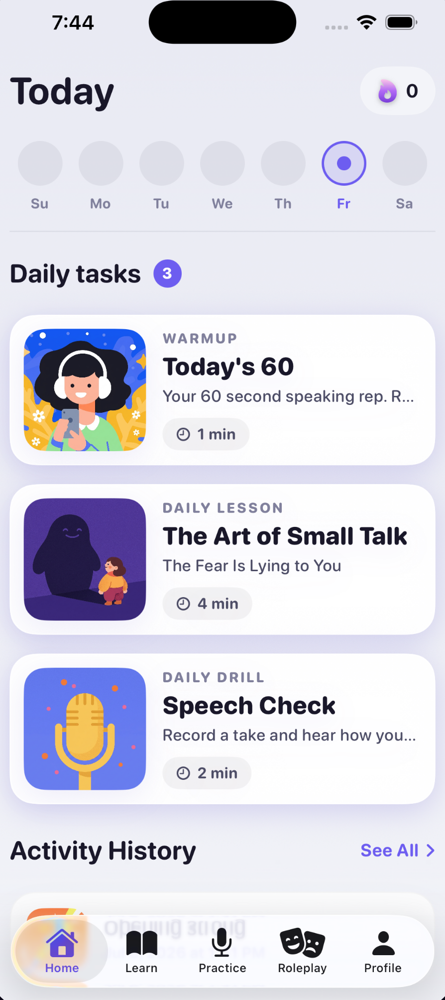
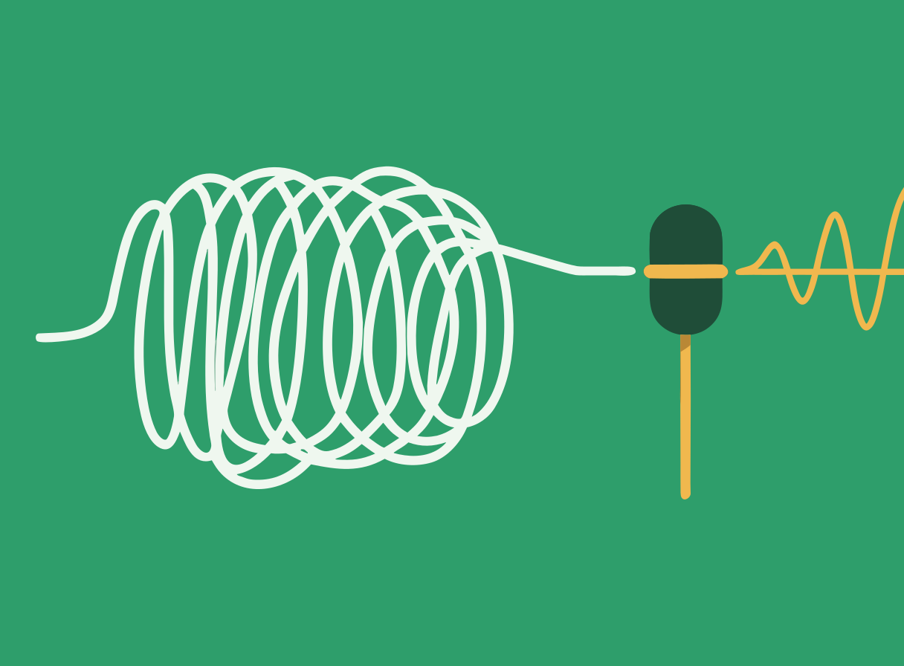
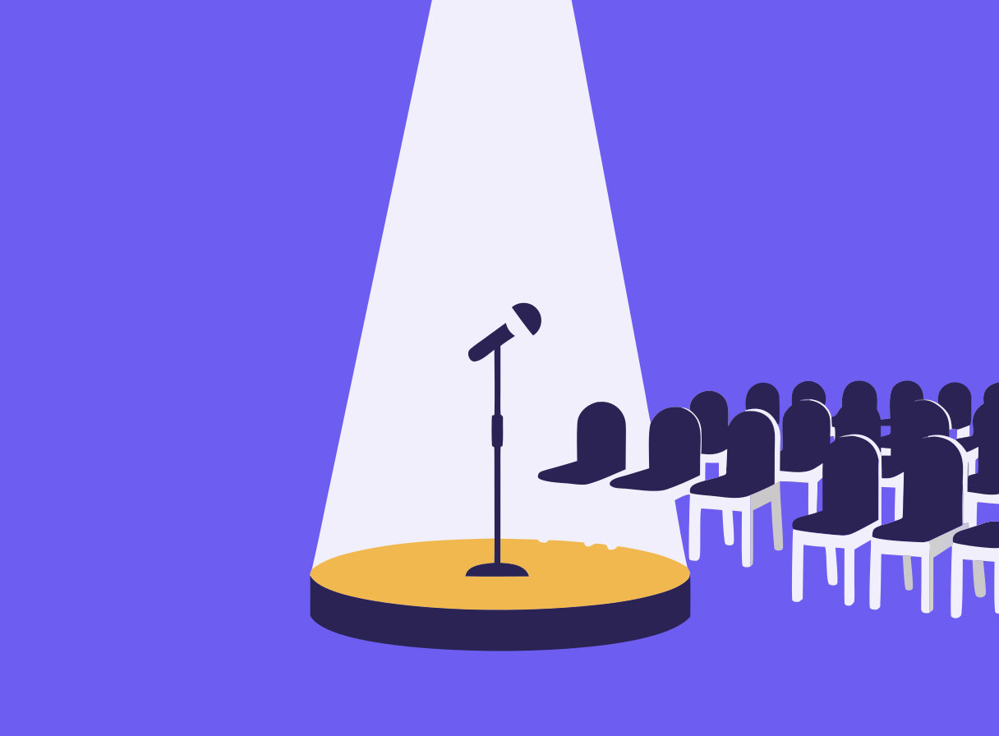
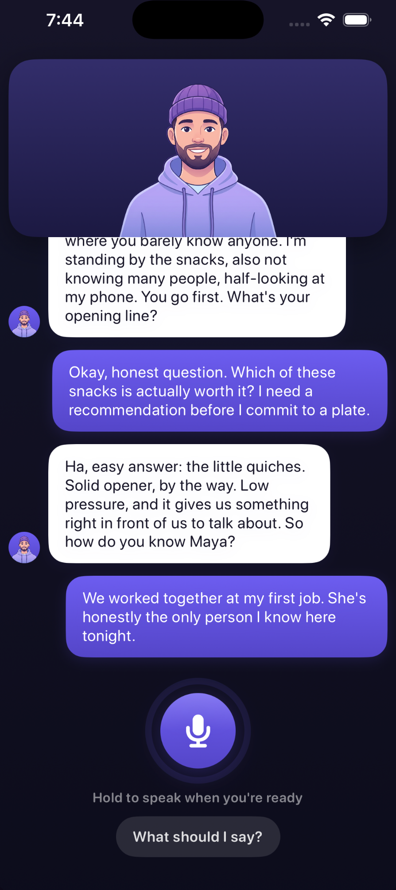
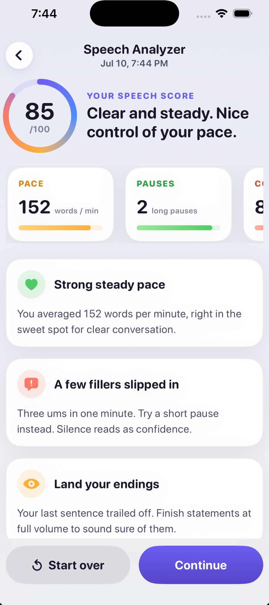
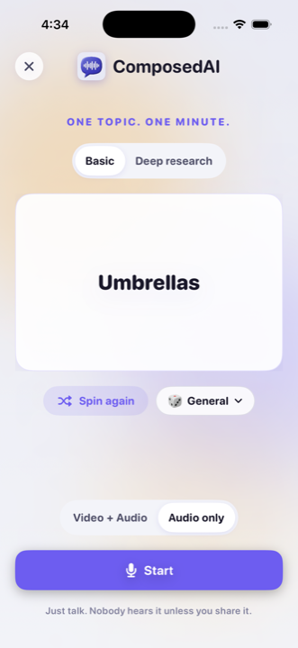
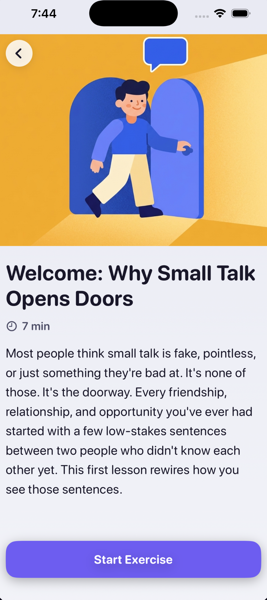
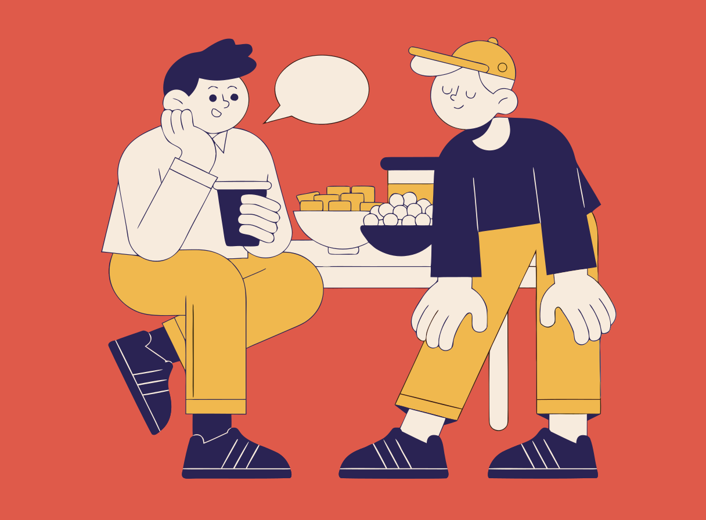

Daily speaking practice, AI roleplays, and honest AI feedback on how you sound. A few minutes a day.

Every tool in the app feeds one of these three skills.
Start conversations and keep them alive. Practice the party version and the elevator version until neither one rattles you.
Lose the filler words and the mumble. The analyzer measures every take and coaches you to a cleaner one.

Get through presentations without white-knuckling them. Practice out loud until the big moment feels like one more take.

Practice fixes all of it.
Every tool works audio only. Nothing you record leaves your phone unless you share it yourself.

Pick a situation, maybe party small talk, maybe asking your boss for something, and play it out with an AI partner that talks back. You rehearse the moment before it happens for real.

Record a take and the app measures your pace, pauses, and filler words right on your phone. Then it tells you what to try on the next take.

Spin a topic and just talk for sixty seconds. It feels weird for about two takes, then it starts feeling like practice.

Short, honest lessons on things like small talk and holding your ground. Read one in a few minutes, then practice it out loud right after.
Reading about conversation only gets you so far. At some point you have to hear yourself talk.
If you want to command the room, this is the wrong app. This one is for making conversations stop feeling like a performance.
You replay conversations afterward and think of the better answer an hour late. Practice takes the pressure off the real thing.

Speaking up at work costs you energy it doesn't seem to cost anyone else. A minute a day makes your voice a habit instead of an event.
You've read the tips. What you never had was a simple way to actually practice out loud, every day.
Spin a topic and hear yourself talk. It stops feeling weird faster than you'd think.
Get the appNo. Your takes stay on your phone, in your private library. Nothing is posted anywhere, and nobody hears a take unless you choose to share it yourself.
About a minute a day for the core practice. Lessons and the other tools are there when you want more, but one honest minute of talking is the habit.
No. Everything works audio only. The camera is there if you ever want it.
It's free to download and comes with a free trial of the full program, so you can give it a real try before deciding if it's for you.
ComposedAI is iPhone first for now. If you want it on Android, email us and tell us, it genuinely affects what we build next.
Something broken, or just want to tell us what to build next? A real person reads every email.
support@composedai.app